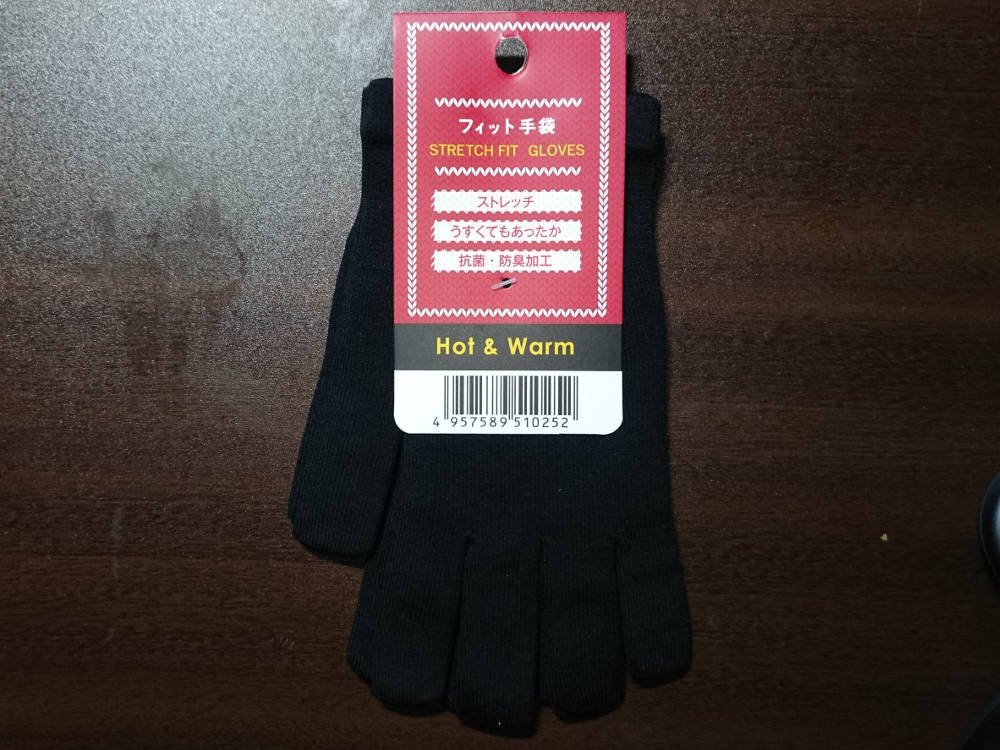
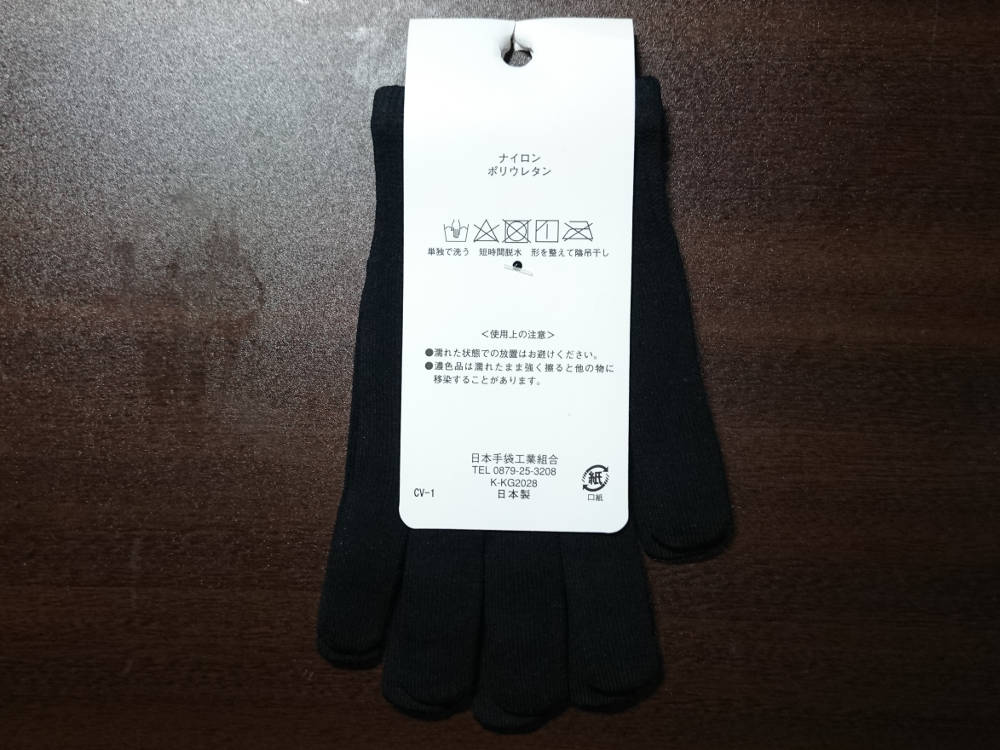

「超極細せんい245本の新感覚手袋」
「超極細せんい245本の新感覚手袋」は、超薄手の防寒用手袋である。

ポリウレタンが混紡されているので伸縮性抜群で、一見すると子供用の手袋かと思うほどに小さいが、はめる
（ちなみに、北海道では「手袋をはく」というらしい）とストッキングのように大人の手にもピタリとフィットする。
この、「薄手でピタリとフィット」というのが重要で、財布から小銭を取り出す、靴紐を結ぶなど、どんな時も常にこの手袋をはめたままで細かな作業ができるのだ。
コンビニやホームセンターなどで取り扱われていることが多いようで、価格も1,000円未満(600～800円程度)と安価である。私は島根県浜田市のLAWSONで発見し、800円ほどで購入した。
最近は、指先に導電性繊維を使用し、スマホ画面のタッチ操作にも対応した新製品が出回っているらしい。
この手袋はおそらく日常生活での使用を想定した製品なのであろうが、実は冬にアウトドアをたしなむ人からも評価が高い。Amazonのユーザレビューなどからもその人気をうかがい知ることができる。
類似の薄手インナーグローブがアウトドアショップでも取り扱われているのを目にすることができる。
サイクリストの間でも人気のようだ。
こんなペラペラの手袋が何の役に立つのかとも思われるが、この「薄さ」がポイントなのである。
アウトドアにおけるインナーグローブの役割
雪山登山などに用いられるグローブは、「二重構造」になっている。すなわち、アウターグローブとインナーグローブである。これらの2種類の手袋は、それぞれ求められる役割が異なる。
アウターグローブは、冬期の過酷な環境から手を保護する、「手の上着」である。手から発生した熱を逃がさぬよう、アウターグローブ内部には保温材が封入されている。
また、手袋内部に雪や風が侵入するのを防ぐために防水透湿性のフィルムが貼られている。また、岩などをつかむこともある掌部分は皮革などで補強されている。
一方インナーグローブは、素手とアウターグローブとの間に装着するものである。先ほどのたとえでいうならば「手の下着」といったところか。比較的薄手で、手にぴったりとフィットすることが求められる。
ではなぜ、このような二重構造が必要とされるのか。
分厚いアウターグローブは、靴紐を結ぶなどの細かな作業には不向きである。しかし、雪山で素手を外気にさらすと手の温度は急激に低下し、しかも再び手袋をはめてもなかなか暖かくならない。
そこで、薄手の手袋の上に厚手の手袋を重ねてはめておき、細かな作業をするときには厚手の手袋だけを脱ぎ去ることで、常に素手を露出しないようにするのだ。
このような使用条件から、「薄くて手にぴったりとフィットし、アウターグローブの中でもゴワゴワしない」手袋が重宝されるのである。
「超極細せんい245本の新感覚手袋」は、登山用の専用の製品と比較すると非常に安価に、しかもコンビニなどで身近に入手することができる上、必要十分な性能を備えた稀有な製品である。
「超極細せんい245本の新感覚手袋」の活躍する場面
もちろん、日常生活における手の防寒として便利に使用することができる。寒い部屋でキーボードを打つ時にも、この手袋ならば違和感が少ない。
アウトドアフリークの先達のように雪山でインナーグローブとして活躍させるのもおすすめ。安価なので、スペアを何組も用意しておいて、インナーグローブが濡れたりするたびに交換することができる。
オートバイやサイクリングのインナーグローブとしても重宝するだろう。特に季節の変わり目などで、「まだ冬用グローブを着用するには早いけど、夏用グローブでは少々手が寒い」というときには、
いつも使っている夏用グローブの下にこのインナーグローブを装着するとよい。
オートバイでは、手袋の厚みが違うだけでもアクセルの感覚が変わってしまい、アクセルワークに支障をきたす。この手袋は薄手なので、握り具合に大きな変化をもたらさずにそこそこの保温性を手に入れることができる。
「超極細せんい245本の新感覚手袋」のバリエーション
薄手でフィット感がよく、細かな操作がしやすいこのインナーグローブ、いくつかの会社が似たような製品を販売しているようだ。

私が買った製品の台紙には、「K-KG2028」という何かの型番のような文字列が記されていた。Webで検索すると、これは何か特定の製品の型番を表すものではなく、
香川県東かがわ市にある日本手袋工業組合に加盟している会社を表す記号であるらしい。
「K-KG2028」は株式会社イチーナに与えられた記号であるとのことなので、製品台紙には「日本手袋工業組合」としか書かれていなかったが、
この製品を製造したのはこの会社とみてよいだろう。（ちなみに、香川県東かがわ市は手袋の全国シェア90%を占める"手袋の町"とのこと）
コンビニエンスストアなどで売られているものは、「日本手袋工業組合」製のものであることが多いようである。近年では珍しくなってしまった「日本製」である。
東レのプロミランというナイロン繊維にセラミック加工を施したものを使用しているようである。
登山用品店などでもこれに似たような薄手インナーグローブが売られている。キャラバンのシームレスグローブや、
McKINLEYというメーカーのものをよく見かける。
さすがに、「日本手袋工業組合」という味も素っ気もない会社のものは置きにくいのだろうか。
アウトドアショップでよく見かけるこれらの製品には、旭化成のレオナ66という繊維が使用されているようだ。
いずれも、価格が1,000円未満であるという点が共通している。
「超極細せんい245本の新感覚手袋」の弱点
「ベルクロ（マジックテープ・面ファスナーとも）に弱い」。
ベルクロのフック（オス）面に容易にくっつき、引きはがすと毛玉ができてしまう。十分注意すべきである。薄い生地なので、同じ場所が何度もベルクロ攻撃にあうとぼろぼろになってしまいそうである。
安価なので、どこかのコンビニで見つけたら一冬分（2,3組）確保しておきたい。
「超極細せんい245本の新感覚手袋」の意義
もちろん、専用に開発された登山用品が過酷な環境において不可欠であるという点に毛頭異論はないし、野外活動のために必要な装備を買いそろえることは大切である。
しかし世の中には、海外製の高価な道具に傾倒し、道具を集めることばかりに夢中になって目的と手段が逆転している「モノマニア」的なきらいがある人種も存在する。そういった向きには疑問を呈したい。
高価な登山用品が高機能であるのは当然である。国内の会社で真面目に生産され、庶民の道具として広く出回っている手ごろな価格の製品がアウトドアでも立派に役立つということに、新鮮な発見と驚きが生まれるのである。